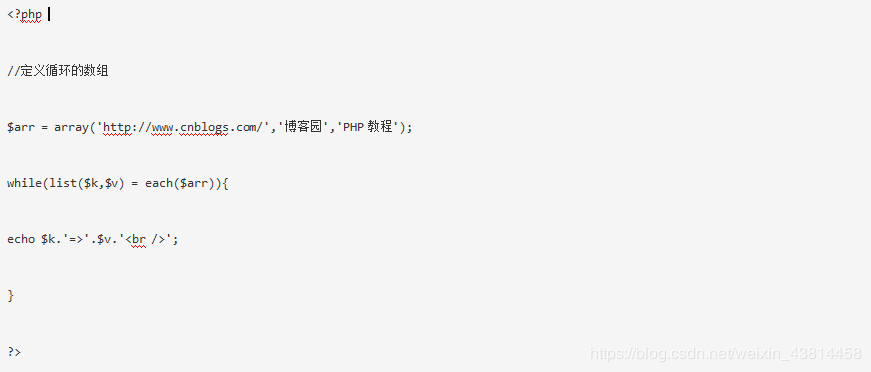
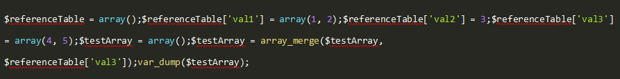
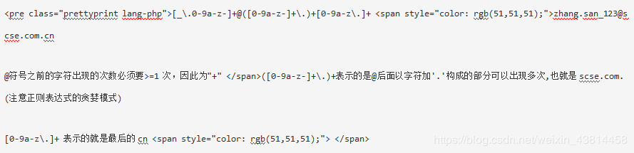
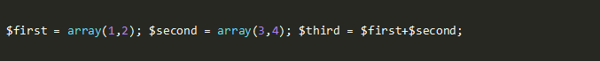
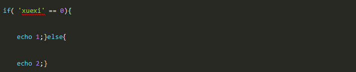

一、单选题（共29题，每题5分）
1.PHP面向对象方法重写描述错误的是？
A、子类必须继承父类
B、子类可以重写父类已有方法
C、重写之后子类会调用父类方法
D、子类也可以具有与父类同名的属性，进行属性覆盖
参考答案：C
答案解析：重写之后子类不会再去调用父类的方法，而是直接调用自身的方法。
2.php选项/信息函数作用错误的是？
A、phpinfo() 输出关于 PHP 配置的信息
B、php_sapi_name() 返回 web 服务器和 PHP 之间的接口类型
C、ini_set() 为一个配置选项设置值
D、ini_get() 获取所有配置选项
参考答案：D
答案解析：ini\_get() 是获取一个配置选项，获取所有配置选项的函数是ini\_get\_all()。
3.下列说法错误的是：
A、链表分为单向链表，双向链表，循环链表
B、栈 先进后出
C、队列 先进先出，可以从头部插入
D、队列 先进先出
参考答案：C
答案解析：链表分为单向链表，双向链表，循环链表 栈 先进后出 队列 先进先出。
4.数组的遍历方式，下列错误的是？
A、foreach
B、each
C、for
D、list
参考答案：D
答案解析：list只能把数组的元素变成变量，并不是遍历。
联合使用list()、each()和while循环遍历数组
each()函数需要传递一个数组作为一个参数，返回数组中当前元素的键/值对，并向后移动数组指针到下一个元素的位置。
list()函数，这不是一个真正的函数，是PHP的一个语言结构。list()用一步操作给一组变量进行赋值。

5.以下哪种方法不可以设置PHP的最大执行时间为120秒？
A、修改php的配置文件 php.ini 文件，max_executin_time = 120;
B、$max_execution_time = 120
C、ini_set("max_execution_time", "120");
D、set_time_limit(120);
参考答案：B
答案解析：第一种方式需要重启服务器，第三种第四种直接在脚本中用函数设置，第二种只是一个普通变量，不管用。
6.正则中\w代表什么含义？
A、[0-9a-z]
B、[0-9a-zA-Z]
C、[0-9a-zA-Z_]
D、[0-9a-zA-Z_-\]
参考答案：C
答案解析：\w匹配字符数字和下划线。
7.Java类库中，将信息写入内存的类是（ ）。
A、 java．io．FileOutputStream
B、 java．io．ByteArrayOutputStream
C、 java．io．BufferedOutputStream
D、 java．io．DataOutputStream
参考答案：B
答案解析：暂无。
8.以下PHP代码运行结果正确的是？

A、Array ( [val1] => Array ( [0] => 1 [1] => 2 ) [val2] => 3 [val3] => Array ( [0] => 4 [1] => 5 ) )
B、array(2) { [0]=> int(4) [1]=> int(5) }
C、array(2) { [0]=> int(1) [1]=> int(2) }
D、null
参考答案：B
答案解析：
array_merge() 将一个或多个数组的单元合并起来，一个数组中的值附加在前一个数组的后面。返回作为结果的数组
10.关于php指针的函数作用，说法错误的？
A、current()返回数组中的当前单元
B、end() 将数组的内部指针指向最后一个单元
C、reset() 将数组的内部指针指向第一个单元
D、prev() 将数组的内部指针向前移动一位
参考答案：D
答案解析：prev()是 数组的内部指针倒回一位。
很多人在刚接触这个行业的时候或者是在遇到瓶颈期的时候，总会遇到一些问题，比如学了一段时间感觉没有方向感，不知道该从那里入手去学习，对此我整理了一些资料，需要的可以免费分享给大家（11年架构师带你解读年薪50万面试通关秘籍。）
如果喜欢我的文章，想与一群资深开发者一起交流学习的话，获取更多相关大厂面试咨询和指导，欢迎加入我的学习交流群点击此处PHP高级交流
11.下面哪一个正则表达式用来验证电子邮件（如： zhang.san_123@scse.com.cn ）的格式最正确（）
A、[_\.0-9a-z]@([0-9a-z]+\.)+[0-9a-z\.-]{2,6}
B、[_\.0~9a~z-]*@([0~9a~z-]+\.)+[0~9a~z\.]+
C、[_\.0-9a-z-]+@([0-9a-z-]+\.)+[0-9a-z\.]+
D、[_\.0~9a~z-]+@([0~9a~z-]+\.)+[0~9a~z]{2,6}
参考答案：C
答案解析：C

12.PHP面向对象继承特征描述错误的是？
A、类使用extends关键字，让子类继承父类
B、子类只能继承父类的非私有属性
C、类继承父类后，相当于将父类的属性和方法copy到子类可以直接使用$this调用
D、PHP只支持单继承不支持一个类继承多个类和多层继承
参考答案：D
答案解析：PHP是单继承只能继承一个类，但是可以进行多层继承。
13.下列哪种PHP运行模式在PHP5.3之后不再支持？
A、CGI
B、FASTCIG
C、ISIPA
D、CLI
14.为什么InnoDB表要建议用自增列做主键？
A、使用自增列(INT/BIGINT类型)做主键，这时候写入顺序是自增的，和B+数叶子节点分裂顺序一致
B、无
C、该表不指定自增列做主键，同时也没有可以被选为主键的唯一索引(上面的条件)，这时候InnoDB会选择内置的ROWID作为主键，写入顺序和ROWID增长顺序一致
D、使用自增列(INT/BIGINT类型)做主键，这时候写入顺序是自增的，和B+数叶子节点分裂顺序一致； 该表不指定自增列做主键，同时也没有可以被选为主键的唯一索引(上面的条件)，这时候InnoDB会选择内置的ROWID作为主键，写入顺序和ROWID增长顺序一致； 除此以外，如果一个InnoDB表又没有显示主键，又有可以被选择为主键的唯一索引，但该唯一索引可能不是递增关系时(例如字符串、UUID、多字段联合唯一索引的情况)，该表的存取效率就会比较差
15.哪项不是yii入口脚本主要工作？
A、定义全局常量
B、包含 [[Yii]] 类文件
C、加载应用配置
D、加载过滤器
参考答案：D
答案解析：入口文件主要工作如下： 定义全局常量； 注册 Composer 自动加载器； 包含
\[Yii
\[Yii
\] 类文件； 加载应用配置； 创建一个应用实例并配置; 调用
\[yiibaseApplication::run()
\[yiibaseApplication::run()
\] 来处理请求。
16.栈和队列具有相同的（）
A、抽象数据类型
B、逻辑结构
C、存储结构
D、运算
17.以下代码中$third的结果是多少？

A、array(1,2,3,4)
B、array(1,2)
C、array(3,4)
D、以上都不对
18.正则表达式中，表示匹配非数字字符的字符是（）？
A、\b
B、\d
C、\B
D、\D
18.正则表达式中，表示匹配非数字字符的字符是（）？
A、\b
B、\d
C、\B
D、\D
19.以下代码输出的结果是？

A、1
B、2
C、3
D、4
参考答案：A
答案解析：if($str==0)，字符串和数字比较是否相等， 相当于 把$str 字符串隐性转换为数字，然后再比较，相当于 if( intval($str) == 0 ) 。if($str==0) 判断 和 if( intval($str) == 0 ) 是等价的，而和 if ($str) 是不一样的。if ($str) 可以判断 $str值有没有被初始化。有没有付值，只要付值，就返回true。 当然你也可以使用 $str="字符串";if($str===0){ echo "返回了true.";} ,就是 判断 $str的数据类型 和值 都和0的值 数据类型一样，才可以返回true。
20.fopen()不支持哪种打开方式？
A、c
B、z
C、x
D、a
参考答案：B
答案解析：fopen()支持“r、r+、w、w+、a、a+、x、x+、c、c+”10种方式。
21.下列哪一项不是关系型数据库的优势？
A、保持数据的一致性
B、由于以标准为前提，数据更新的开销小
C、可以进行join等复杂查询
D、易扩展，加一台新的服务器很快
22.以下程序段 输出结果是？
echo 24%(-5);
A、5
B、4
C、-4
D、19
23.大型信息系统是以信息技术和（ ）为支撑的大系统，具有规模庞大、分布广阔、采用多级网络结构、提供多种类型应用等特征。
A、通信技术
B、安全技术
C、数据处理技术
D、虚拟化技术
24.某银行为用户提供网上服务，允许用户通过浏览器管理自己的银行账户信息。为保障通信的安全，该Web服务器可选的协议是()。
A、POP
B、SNMP
C、HTTP
D、HTTPS
25.mysql5.7中关于json类型的说明，不对的是那个
A、JSON数据可以做有效性检查
B、json数据中，还是需要遍历所有字符串才能找到数据
C、JSON使得查询性能提升
D、JSON支持部分属性索引，通过虚拟列的功能可以对JSON中的部分数据进行索引
26下面PHP运行模式是模块模式的？
A、cgi
B、cli
C、apache2handler
D、fast-cgi
27.想匹配 字符串 "abc 123" 中的数字，哪个正则表达式是正确的？
A、/\d*/
B、/[0-9]*/
C、/[^a-z]*/
D、/\d+/
28.虽然Linux系统没有文件扩展名的概念，但是我们通常认为以（）结尾的文件是shell脚本
A、exe
B、doc
C、sh
D、py
29.php的运行模式不包含下面的那个？
A、IaSApi
B、fast-cgi
C、cli
D、apache2handler
二、多选题（共1题，每题5分）
1.如何让PHP网站运行更快？
A、压缩代码，去除无用的注释或空白
B、尽量使用PHP内置函数或扩展函数
C、用apc/xcache/opcache等缓存PHP的opcode
D、把服务器配置把FastCGI参数调整最大